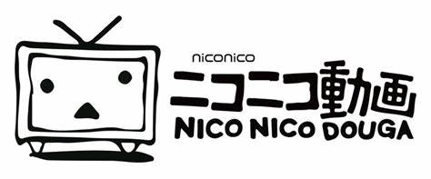

返回
Niconico动画是NIWANGO公司2006年所提供的线上影片分享网站，常被简称为Niconico、N站或Nico等。与YouTube等影片共享网站相似，但Niconico动画提供观赏者可在影片上留言的功能，而留言会以弹幕的形式出现在影片上。原本因为设备、宽带负荷等因素，Niconico动画规定观赏影片者必须注册，并根据注册顺序开放使用者可于全天（24小时）或限制时间（日本时间2:00-19:00）登入，但现在Niconico动画的使用者可于全天（24小时）登入。
弹幕功能
- 留言(弹幕)机能是NICONICO动画最大的特征之一。
- 评论功能的特征
- 评论在影片播放中按下按钮便会发送，成功的话3秒后就会显示在影片上。结果就做出了与一般留言版不同，“超越实际时间，虚拟的时间共享”（管理层称之为“非同期Live”）的感觉。评论功能导入了时间的观念，使NICONICO动画使用者获得其他影片网站都没有的“观众一起参与”的感觉，并取得空前的成功。
- 另外针对不喜欢影片有文字流过的人，NICONICO动画亦设有不显示评论的功能。
- 另外NICONICO动画亦设有“我的备忘录”功能，让使用者能保存特定时点的评论。而观看“我的备忘录”时亦可以任意更改指定留言是否显示。
- 至γ时代为止，输入留言是会显示使用者的名称的，但因为大部分人认为像匿名讨论区般才能自由发表评论，导致极少人在个人资料中加上自己的显示名称。因为这样，这个功能就在RC服务开始的同时停止了
指令功能
- 正常的留言都是由右流向左（曾经在2008年4月1日愚人节全面改为由左流向右），文字的颜色为白色。而指令功能就能更改留言的颜色、大小。使用方法是在留言栏的左边输入指令
（如“ue”、“big”等），不同属性的指令亦能够共用。应用方面，此功能能够为影片造出字幕，当此功能加上特殊文字（Unicode）并且组合，更能造出巨大的形文字。
- 保存留言数
- 一套影片的留言保存数目，1分00秒以内的话为100个，1分01秒至5分00秒以内为250个，5分01秒至9分59秒以内为500个，10分00秒以上的则统一为1000个。超出此数字的话就会以发送时间为优先，显示最新的留言。
- 留言的显示数目在营运当初是没限制全部显示的，后来在2006年12月19日订立统一250个的限制，在2007年1月5日又改变为上述的三级制。
- 留言的倾向
- NICONICO动画的留言内容，跟留言版2ch的留言有很多相同的特征。这是因为在NICONICO动画营运当初，2ch的管理人西村博之在自己的部落格介绍此网站的缘故。NICONICO动画及2ch的留言最大的相同特征，就是把笑写成“w”（通称“芝”，取自Wara-u的首个字母W）并以已大量的方式送出（例如“wwwwwww”）。niwango官方制作的初学者入门动画中，亦有说明在影片中该笑的地方写出“w”。
- 对于恶意使用者的政策
- 然而，NICONICO动画间中亦会出现恶意使用者(一般通称‘厨’)利用标签、留言等方式，对其他人施诽谤或中伤的事件。对此营运会对这施以删除。
2006年12月12日，NICONICO动画开始提供实验性质的服务，称为ニコニコ动画（仮）。此时的NICONICO动画只是将储存于YouTube上的影片，加上即时留言字幕的功能，本身并没有提供影片上载的服务，与YouTube也没有正式的关系。2007年2月23日后，YouTube禁止NICONICO动画存取其影片，于是NIWANGO公司推出自己的动画分享服务SMILEVIDEO。目前NICONICO动画可以存取储存于SMILEVIDEO与photozou等网站上的动画。NICONICO动画最大的特征为字幕形式的留言功能。使用者可自由指定字幕出现的时间、于影片上的位置、字体的大小、颜色等。留言可以从影片的右方移动到左方，也可以固定在某个位置一段时间。
NICONICO动画的使用者绝大部分是日本人，但据管理者统计，每日影片观看次数约有1%来自于台湾、0.5%来自于香港。这使得 NICONICO动画于2007年10月18日开始提供台湾版的服务，提供繁体中文使用接口、专用留言系统与NICONICO市场。
截止2011年12月，NICONICO动画注册会员达到2500万人，付费会员达到149万人，手机会员711万人。2011年9月-12月NICONICO动画季度盈利3.0亿日元，成为目前世界上少数实现盈利的视频网站之一。
2016年3月31日，来自日本的niconico终于开放了国内的访问权限，无需翻墙即可访问niconico。并且百度搜索niconico后，官网链接后还会显示“官网”的蓝色标志。


© All Rights reserved for Go Believe Bots